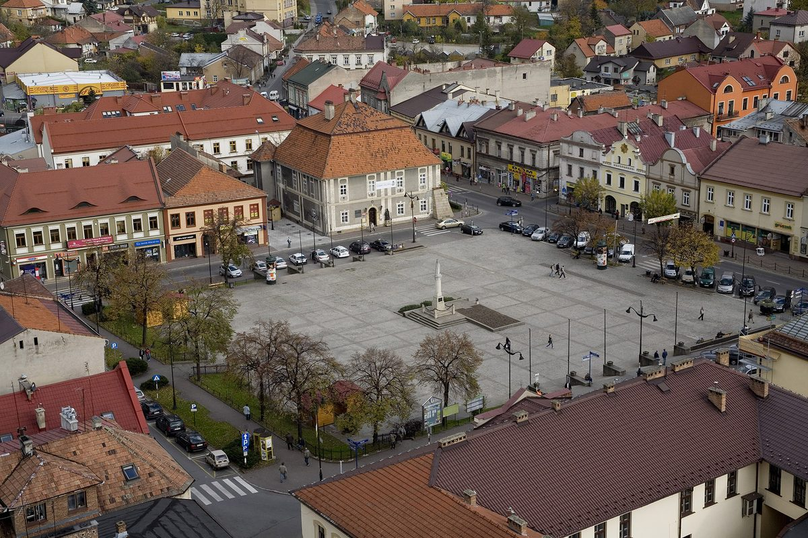

폴란드 '비스와강 에너지 클러스터' 4개 지자체, 주민 주택·공공건물에 재생에너지 설비 732건 추진…보흐니아 태양광 540.8kWp

드르비냐 면 주도로 보흐니아 시·코시체·노비 브제스코가 함께, 보흐니아 시가 밝힌 계획 용량은 태양광 540.8kWp·저장 404kWh·히트펌프 200kW…EU 회복기금 재원, 2027년 6월까지 시공사 입찰 거쳐 설치
폴란드 남부 말로폴스카주의 네 지자체가 함께 만든 '비스와강 에너지 클러스터'가 주민 주택과 공공건물에 태양광·전기 저장장치·히트펌프 설비 732건을 놓는 사업을 추진한다. 클러스터는 드르비냐 면이 대표를 맡고 보흐니아 시와 코시체, 노비 브제스코가 참여하며, 2017년 7월 31일 협약을 맺고 출범했다. 보흐니아 시가 밝힌 계획 용량은 태양광 540.8kWp, 저장장치 404kWh, 히트펌프 200kW다. 사업 '비스와강 에너지 클러스터 공동체 발전 지원'은 2025년 8월 1일부터 2027년 6월 30일까지 진행되며, 돈은 유럽연합(EU) 넥스트제너레이션EU 재원인 폴란드 국가회복·회복력계획(KPO)에서 나온다. 클러스터는 곧 입찰로 시공사를 고른 뒤 각 지자체에서 설치에 들어갈 계획이다. 클러스터 쪽은 2026년 6월 에너지공동체 대회에서 사업을 발표했고, 8월에는 군 추수 축제에서 주민들과 재생에너지와 지역 전환을 놓고 이야기를 나눴다.
시민에너지 관점
네 지자체가 2017년 클러스터 협약을 맺고 주민 집 지붕과 공공건물에 설비 732건을 놓는 사업에 착수하기까지 8년이 걸렸다는 사실은, 지역 에너지 협력이 서류에서 설비로 넘어가는 데 얼마나 긴 준비가 필요한지를 보여 준다. 작은 면·시가 모여 봐야 행정만 복잡해진다는 시각도 있지만, 따로따로였다면 입찰 규모도 기금 신청 역량도 갖추기 어려웠을 일을 묶어서 해낸 것이 바로 클러스터의 몫이다. 다만 설비가 주민과 공공건물에 깔린 뒤 전기를 서로 나누고 관리하는 공동체 운영이 따라붙어야, 보조금 사업이 지역이 함께 소유하는 에너지 체계로 자란다. 국내 기초 지자체들도 이웃 시·군과 묶어 공동으로 사업을 짜고 기금을 받는 연합 구조를 지금부터 만들어 둬야 한다.
출처: tylkomalopolska.pl 2026-11-05 Kornelia Wobek 원문 보기
창간 전 시험 발행 기사입니다.
ポーランド「ヴィスワ川エネルギー・クラスター」の4自治体、住民の住宅と公共施設に再エネ設備732件を推進…ボフニャの太陽光540.8kWp
ドルヴィニャ村が主導しボフニャ市・コシツェ・ノヴェ・ブジェスコが参加、ボフニャ市が示した計画容量は太陽光540.8kWp・蓄電404kWh・ヒートポンプ200kW…EU復興基金が財源、2027年6月までに施工業者の入札を経て設置
ポーランド南部マウォポルスカ県の4自治体がともにつくった「ヴィスワ川エネルギー・クラスター」が、住民の住宅と公共施設に太陽光・蓄電設備・ヒートポンプを計732件設置する事業を進める。クラスターはドルヴィニャ村が代表を務め、ボフニャ市とコシツェ、ノヴェ・ブジェスコが参加しており、2017年7月31日に協定を結んで発足した。ボフニャ市が示した計画容量は太陽光540.8kWp、蓄電404kWh、ヒートポンプ200kWだ。事業「ヴィスワ川エネルギー・クラスター共同体の発展支援」は2025年8月1日から2027年6月30日まで行われ、資金は欧州連合（EU）のNextGenerationEUを財源とするポーランドの国家復興・強靭化計画（KPO）から出る。クラスターは近く入札で施工業者を選び、各自治体で設置に入る計画だ。クラスター側は2026年6月のエネルギー共同体の大会で事業を発表し、8月には郡の収穫祭で住民と再生可能エネルギーや地域の転換について語り合った。
市民エネルギーの視点
4自治体が2017年にクラスター協定を結んでから、住民の屋根と公共施設に設備732件を設置する事業に着手するまで8年かかったという事実は、地域エネルギーの協力が書類から設備へ移るまでにどれほど長い準備が必要かを示している。小さな村や市が集まっても行政が複雑になるだけだという見方もあるが、単独では入札の規模も基金申請の力も備えにくかった仕事を束ねてやり遂げたことこそクラスターの役割だ。ただし設備が住民と公共施設に行き渡った後、電気を互いに融通し管理する共同体の運営が伴ってこそ、補助金事業は地域が共同で所有するエネルギーの仕組みへと育つ。韓国の基礎自治体も、近隣の市・郡と組んで共同で事業を組み、基金を受ける連合の仕組みを今からつくっておくべきだ。
出典: tylkomalopolska.pl 2026-11-05 Kornelia Wobek 原文を読む
創刊前の試験発行記事です。
波兰"维斯瓦河能源集群"4个地方政府推进在居民住宅和公共建筑安装732套可再生能源设施…博赫尼亚光伏540.8kWp
由德尔维尼亚乡牵头，博赫尼亚市、科希采、新布热斯科参加，博赫尼亚市公布的计划容量为光伏540.8kWp、储能404kWh、热泵200kW…资金来自欧盟复苏基金，2027年6月前经施工招标完成安装
由波兰南部小波兰省4个地方政府共同组建的"维斯瓦河能源集群"（Nadwiślański Klaster Energii），正在推进在居民住宅和公共建筑上安装光伏、储能设备和热泵共732套的项目。该集群由德尔维尼亚乡（Drwinia）牵头，博赫尼亚市（Bochnia）、科希采（Koszyce）和新布热斯科（Nowe Brzesko）参加，于2017年7月31日签署协议成立。博赫尼亚市公布的计划容量为光伏540.8kWp、储能404kWh、热泵200kW。"支持维斯瓦河能源集群共同体发展"项目从2025年8月1日实施到2027年6月30日，资金来自以欧盟"下一代欧盟"（NextGenerationEU）为来源的波兰国家复苏与韧性计划（KPO）。集群计划近期通过招标选定施工方，随后在各地开始安装。集群方面在2026年6月的能源共同体大会上介绍了项目，8月又在县丰收节上与居民交流可再生能源和地方转型。
市民能源视角
4个地方政府从2017年签署集群协议，到启动在居民屋顶和公共建筑上安装732套设施的项目，用了8年时间，这说明地方能源合作从纸面走到设备需要多么漫长的准备。有人认为小乡小市聚在一起只会让行政更复杂，但把单独难以具备招标规模和申请基金能力的事情捆在一起办成，正是集群的作用。不过，设施装到居民和公共建筑之后，还要有相互调剂电力、共同管理的共同体运营跟上，补贴项目才能成长为由地方共同拥有的能源体系。韩国的基层地方政府也应从现在起与相邻市郡联手，建立共同策划项目、共同申请基金的联合结构。
来源: tylkomalopolska.pl 2026-11-05 Kornelia Wobek 查看原文
本文为创刊前试发行文章。
Four Polish municipalities in the Vistula Energy Cluster plan 732 renewable installations on homes and public buildings, with 540.8kWp of solar in Bochnia
Led by Drwinia commune with Bochnia town, Koszyce and Nowe Brzesko, Bochnia's stated planned capacity is 540.8kWp of solar, 404kWh of storage and 200kW of heat pumps; funded by the EU recovery fund, installation follows a contractor tender and runs to June 2027
The Vistula Energy Cluster (Nadwiślański Klaster Energii), formed by four municipalities in Poland's southern Małopolska region, is moving ahead with a project to put 732 solar, energy storage and heat pump installations on residents' homes and public buildings. The cluster is led by Drwinia commune and includes the town of Bochnia, Koszyce and Nowe Brzesko, and was set up by an agreement signed on July 31, 2017. The planned capacity stated by Bochnia is 540.8kWp of solar, 404kWh of storage and 200kW of heat pumps. The project, "Support for the development of the Vistula Energy Cluster community", runs from August 1, 2025 to June 30, 2027 and is funded through Poland's National Recovery and Resilience Plan (KPO), financed by the EU's NextGenerationEU. The cluster plans to select a contractor by tender shortly and then begin installation in the member municipalities. Cluster representatives presented the project at an energy communities congress in June 2026 and talked with residents about renewable energy and local transition at a county harvest festival in August.
Citizen Energy View
It took eight years for four municipalities to get from signing a cluster agreement in 2017 to launching a project to install 732 systems on residents' roofs and public buildings, which shows how much preparation local energy cooperation needs to move from paper to equipment. Some see small communes and towns banding together as nothing but extra bureaucracy, but bundling work that none could have managed alone, in tender size or in the capacity to apply for funds, is exactly what the cluster is for. Once the installations are in place, though, a community that shares and manages the electricity among its members must follow if a subsidy project is to grow into an energy system the area owns together. Korea's basic local governments should start now to build alliances with neighbouring cities and counties to plan projects and apply for funding jointly.
Source: tylkomalopolska.pl 2026-11-05 Kornelia Wobek Read the original
This article was published during the trial period before launch.